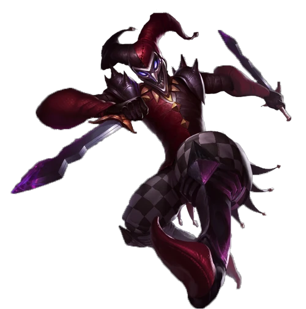
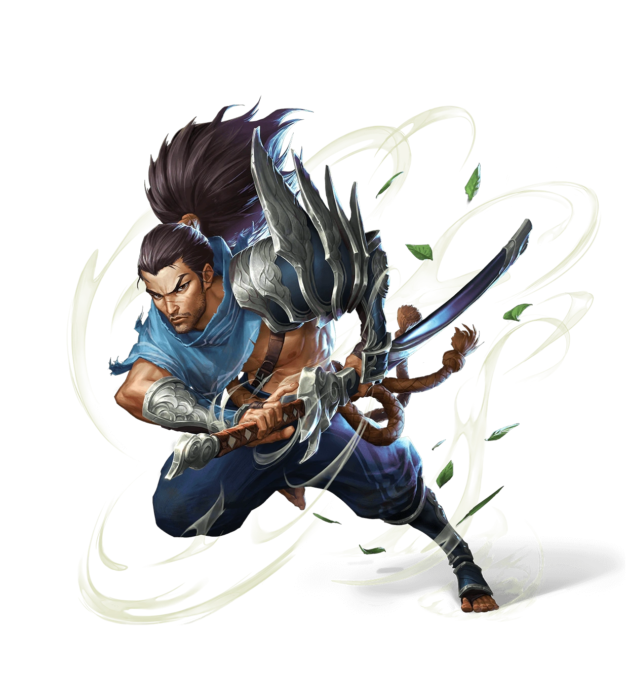
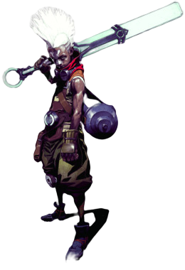

Clique sobre o campeão
Olá, vamos
conhecer algumas
histórias
de
campeões do LOL


SHACO

YASUO

EKKO
A maioria diria que não há graça na morte. E não há, a não ser que você seja Shaco -
então a morte é hilária. Ele é o primeiro comediante homicida totalmente
funcional de Valoran; ele faz piadas até que alguém morra, e depois
ele ri. A figura que ficou conhecida como Bufão Demoníaco é um
enigma. Ninguém chegou a uma conclusão quanto a sua origem, e Shaco
também nunca fala sobre isso. Uma crença popular diz que Shaco não
é de Runeterra - que ele é algo de um mundo sombrio e pervertido.
Há ainda os que acreditam que ele é uma manifestação demoníaca dos
instintos obscuros da humanidade, portanto não há como ver razão nele. A crença mais plausível e que Shaco é um assassino de aluguel, deixado a mercê de seus apetrechos lunáticos até que seus serviços sejam solicitados. Não se pode negar que Shaco é um individuo astuto, escapando de autoridades a cada vez que partem em sua busca para interrogá-lo sobre alguma atrocidade horrenda. Enquanto essas histórias tranquilizam os habitantes de Valoran, parece inimaginável que uma pessoa tão ameaçadora possa continuar a solta.
lá qual for a verdade dessa história, Shaco é um indivíduo
horripilante e elusivo, sempre visto onde a loucura pode reinar
abertamente.
SHACO
Região: Zaun
Altura: 18,6cm
O choro vinha de um garoto. Seis, talvez sete verões.
Ele estava sentado de pernas cruzadas e de costas para mim, diante de uma grande árvore. O choro transformou-se em fungadas e soluços pesarosos. Paro no ponto onde a trilha de árvores cessa e olho para as sombras que elas projetavam sobre a estrada. O sol do meio-dia é impiedoso, e os forte raios incidem sobre a cabeça do garoto. Ele não parece ferido. A clareira estava limpa, desprotegida.
Você não é necessário. Siga seu caminho.
A voz reverbera claramente em minha cabeça, embora eu não a tenha ouvido tão intensamente por bastante tempo. Eu me viro com o som de um terrível suspiro, acompanhado de novos soluços.
Quando estou a três espadas de distância, piso em um galho seco que anuncia minha chegada. Ao ouvir o som, o garoto começa a falar.
"Teo, sinto muito, eu não queria..." – os ágeis pedidos de desculpas do garoto são afogados pelas mangas de sua roupa, com as quais ele esfrega o próprio rosto. Ao me ver, o garoto fica atônito.
Recua tão rapidamente que suas costas encontram a árvore.
"Emai pagou à Irmandade", balbucia o coitado. "Eu não estava brincando na estrada."
Ao mencionar o grupo, minha mão desliza para a espada. O garoto me observa. O choro é substituído por uma série de arquejos vazios. Mas é claro. Ele pensa que sou algum bandido Navori que veio tomar algo dele.
Pensa que sou um criminoso.
Solto a empunhadura, tentando parecer mais amigável. "Não, não sou da Irmandade", digo a ele. "Só ouvi alguém enquanto eu passava pela estrada, parecia precisar de ajuda."
O garoto seca as bochechas molhadas com as mangas da roupa, tentando parecer íntegro diante de um estranho.
"Sabe quem poderia ser?", perguntei a ele.
Lentamente, o garoto nega com a cabeça, mas a verdade logo vem à tona.
"Era eu", admite, com uma voz envergonhada. "Eu... eu só queria brincar com ela." Ele aponta para cima. Entre os galhos mais altos da árvore, encontrava-se uma velha pipa de festival. A cauda de seda agitava-se sob a leve brisa. "É do Teo."
Os olhos do garoto começam a se encher de lágrimas novamente. Ele me mostra as palmas das mãos, cobertas de seiva e escurecidas pela poeira do tronco.
"Eu tentei subir na árvore, mas ela é alta demais. O Teo vai ficar furioso comigo. Ele me disse que não era pra pegar."
Ficamos em silêncio por um momento. "Meu irmão sempre fala a mesma coisa", murmurei.
Há uma pequena pilha de terra rompida diante do garoto. Ajoelhei-me para remover a camada de cima, revelando um novo broto de árvore.
"Meu emai é um tecelão de madeira. Estou aprendendo. Daí, pensei que...", diz o garoto enquanto abaixa a cabeça, envergonhado pela ideia que teve. Tecer madeira, mesmo que de um broto, tomaria muito mais do que uma tarde.
Um sorriso estampava meu rosto naquele momento. "Um esforço muito admirável."
Os olhos do garoto observavam lentamente os desenhos de minha ombreira.
"Esses traços não são da nossa vila", afirma ele em tom de alerta. "... nem da vila do próximo vale."
"Estou a caminho de Weh’le", respondi. "Tenho avançado num ritmo bom pela estrada noxiana, embora as pedras incomodem um pouco os pés." Tentei sorrir, mas só de pensar que Noxus pudesse nos dar qualquer coisa de valor, sabia que o faria com pesar.
"Você pode me ajudar?", perguntou o garoto.
Olhei para a pipa que estava presa delicadamente entre os galhos mais altos. "Não escalo uma árvore há eras, garoto."
"É Joab. Meu nome é Joab.
Estendi minha mão, mas meu nome hesitava em sair da minha boca. Faz muito tempo que não falo meu nome sem sentir vergonha.
Vamos lá, já te chamaram de coisas piores.
"Sou Yasuo", respondi enquanto puxava o garoto do chão.
Saio debaixo da sombra da árvore e volto para a clareira banhada pelo sol para ter uma visão melhor. O dia está calmo e bastante quente. Fecho os olhos para sentir as pequenas correntes de ar que dançam pela campina. Uma leve brisa surge, balançando os cabelos que caem sobre meu rosto.
"Queria poder soprá-la até o campo aberto, isso sim. Tecer madeira não adianta de nada", resmungou Joab, triste tanto pela pipa quanto por seu brotinho. "Havia um senhor que podia mover o vento, mas ele morreu. O aprendiz dele também conseguia, mas o emai disse que ele é perigoso e foi quem matou o próprio senhor..."
Seguro a bainha da minha espada. Quando a removo, concentro-me na magia. Ventos circulares agitam-se ao redor da lâmina, em espirais cada vez mais rentes. Folhas secas e poeira dançam com ela até que moldo um redemoinho à minha vontade e o lanço num rápido movimento.
A força invisível acerta precisamente a árvore, que chacoalha com o impacto. Os galhos se movem como se um espírito oculto os estivesse possuindo e, por fim, atingem a pipa. A seda colorida ergue-se gentilmente com o vento que sopra por debaixo dela e se dissipa pelo céu. Lentamente, a pipa vem em minha direção e pousa sobre minha mão estendida.
Joab estava perplexo, mas se recompôs rapidamente. O medo estampava seu rosto outra vez.
"É você?", perguntou ele. "O aprendiz daquele senhor?"
Todos em Ionia sabem quem você é.
Joab olha para a estrada da floresta, pensando que talvez alguém estivesse me perseguindo. "Você fugiu?", ele sussurrou, mas balancei a cabeça. "Então deixaram você ir embora? Quero dizer, você foi perdoado?"
"Não posso ser perdoado por um crime que nunca cometi." É só um detalhe, mas eu disse antes que a voz em minha cabeça pudesse dizer.
Mas você matou os outros...
Respirei profunda e lentamente, concentrando-me na brisa fresca em minhas costas e na pipa em minha mão para me afastar das lembranças. Se tinha algum comentário, Joab guardou para si em um primeiro instante
Quando abriu a boca para fazer outra pergunta, um brilho de metal emergiu da floresta e reluziu ao sol.
Ergo instintivamente minha lâmina e me deparo com uma versão mais velha do rosto de Joab, empunhando uma pequena ferramenta de cultivo amarrada a uma longa corda. Abaixo rapidamente minha arma, mas é tarde demais: o medo e a desconfiança inundam a clareira.
Rápido demais para reagir e lento demais para cessar.
Nunca é o suficiente para ele. Essa é a minha vida inteira resumida.
O irmão de Joab nos observa. Porém, não sai da segurança da floresta.
"Joab!", chama ele. Joab corre na direção dele, mas trava ao ver a ferramenta e a corda. Acalmo o vento para tentar escutar melhor.
"Para o que vai usar isso, Teo?", perguntou Joab, enfurecendo-se ao perceber a razão. "Você sabia que eu pegaria a pipa, não é?"
Balanço a cabeça, em negação. É claro que sabia.
Os irmãos mais velhos sempre sabem o que os mais novos farão.
"Claro que sim, você sempre faz exatamente o oposto do que eu digo, Joab", resmungou o irmão mais velho, olhando para mim. "Quem é esse?"
Joab olha para trás e sussurra no ouvido de seu irmão. Os olhos de Teo arregalam-se por um instante e depois contraem-se em desconfiança.
"Emai disse que é hora de comer", exclamou Teo enquanto se virava para partir. Joab puxa o garoto pelo braço, tentando fazê-lo ir mais devagar. Ele sussurra novamente no ouvido do irmão.
Tento fazer com que o vento não traga as próximas palavras, mas era tarde demais.
"Não, ele não pode vir conosco", responde Teo. "Ele é xiiri."
Xiiri.
A palavra fica entalada em minha garganta por um tempo. Xiiri é algo indesejado. Uma desgraça trazida por forasteiros ou pela ganância. Uma pequena praga que acompanha os irmãos mais velhos...
O sol está forte e aquece a lâmina que está ao meu lado. É uma palavra que escutei a vida toda.
Você não é necessário. Siga seu caminho.
Preparo-me para algo certamente desagradável e me aproximo dos irmãos.
"Escute seu irmão, garoto", afirmo, entregando as preciosas fitas de seda para Joab. "Os irmãos sabem o que é melhor para nós."
Antes que qualquer um dos dois pudesse dizer algo, eu me afasto e retorno para a estrada.
YASUO
Região: Yonia
Altura: 1,80m
Embora muitos vejam Jinx apenas como uma maluca carregando um monte de armas perigosas,
alguns ainda se lembram dela como uma menina relativamente inocente de Zaun; uma garota
curiosa, cheia de grandes ideias, e que nunca conseguiu se encaixar nos padrões. Ninguém
sabe ao certo o que aconteceu para transformar aquela doce menina em uma lunática, famosa
por seus arroubos de destruição. Mas depois que Jinx surgiu na cena de Piltover, seu inegável
talento para espalhar o caos e causar anarquia se tornou lendário.
Jinx começou a ganhar notoriedade "pregando peças" nos cidadãos de Piltover... principalmente naquele
que tinham alguma conexão com os abastados clãs de mercadores. As "peças" podiam variar de meras brincadeiras
irritantes a atos perigosos e criminosos. No Dia do Progresso, várias ruas foram fechadas quando ela libertou
vários animais exóticos do cativeiro do Conde Mei. Ela causou vários dias de transtornos ao comércio local quando
enfeitou as icônicas pontes da cidade com lindas e destrutivas mordidinhas flamejantes. Certa vez, ela até
conseguiu mudar de lugar todas as placas de sinalização da cidade, colocando-as em locais completamente diferentes e confusos.
Embora os alvos dessa reles arruaceira parecessem aleatórios e sua motivação fosse meramente criar baderna, seus atos sempre
serviam para interromper brevemente o ritmo sempre ordeiro da cidade.
Naturalmente, os Vigias atribuíam alguns desses crimes às quimiogangues da Subferia, mas Jinx não ficava contente quando outros
recebiam o crédito por suas mirabolantes travessuras, e então ela passou a fazer questão de sempre ser reconhecida na cena do crime.
Logo, começaram a circular rumores sobre uma misteriosa zaunita de cabelo azul que carregava explosivos quimtec, um lança-mísseis com
boca de tubarão e uma metralhadora. Mesmo assim, as autoridades continuaram considerando essas ocorrências improváveis. Afinal, como
uma delinquente de rua qualquer poderia ter acesso a esse tipo de arsenal mortífero?
A onda de bombardeios de Jinx parecia não ter fim e os vigias nunca conseguiam prender o culpado. Ela começou a assinar suas obras
de destruição com chamativos grafites e provocações dirigidas à mais nova aliada da xerife da cidade na luta contra o crime, a Defensora
Vi.
A reputação de Jinx cresceu, deixando o povo de Zaun em dúvida se ela era uma heroína por desafiar os arrogantes piltovenses, ou uma
lunática perigosa por aumentar as tensões existentes entre suas duas cidades.
Após meses de carnificina, Jinx revelou seu maior plano até então. Em rosa-choque, sua marca registrada, Jinx pintou as paredes dos Cofres
Eclípticos — uma das estruturas mais seguras de Piltover — com uma caricatura nada lisonjeira da Defensora Vi e detalhes sobre sua
intenção de roubar o local.
Antes da data estipulada para o assalto, uma desconfortável tensão se instalou sobre Piltover e Zaun. Muitos duvidavam que Jinx tivesse a
coragem de aparecer e arriscar ser capturada.
Quando o dia chegou, Vi, a Xerife Caitlyn e os Vigias prepararam uma armadilha para Jinx fora do prédio. Mas Jinx já tinha entrado,
escondida dentro de um enorme caixote de moedas que havia sido entregue dias antes. Quando Vi ouviu o tumulto eclodir de dentro da
estrutura, ela sabia que os Vigias tinham sido enganados mais uma vez. Ela entrou em disparada no prédio e o confronto que se seguiu
deixou os Cofres Eclípticos em ruínas fumegantes, até que a ardilosa Jinx sumiu, sem deixar vestígios.
Hoje em dia, Jinx continua à solta, e continua sendo uma pedra no sapato de Piltover. Seus métodos inspiraram outros quimiopunks, bem
como várias peças de teatro satíricas ilustrando a incompetência dos Vigias e até mesmo o surgimento de algumas gírias e coloquialismos
em ambas as cidades; mas ninguém tem coragem de chamar a Defensora Vi de "Garotinha Rosa Choque" na frente dela.
Tanto o objetivo final quanto a óbvia obsessão de Jinx por Vi continuam sendo um mistério, mas uma coisa é certa: seus crimes continuam
e estão cada vez mais audaciosos.
JINX

Região: Zaun
Altura: 1,63m
Warwick é um monstro que assombra os becos cinzentos de Zaun. Transformado por mórbidos experimentos, seu corpo é enxertado com um intricado sistema de câmaras e bombas, um maquinário que preenche suas veias com uma ira alquímica. À espreita nas sombras, ele caça os criminosos que aterrorizam o submundo da cidade. Warwick fica enfurecido quando sente o cheiro de sangue. Ninguém que o derrama consegue escapar.
Embora muitos considerem Warwick apenas uma fera, por trás de sua fúria há a mente de um homem; um gângster que abdicou de sua lâmina e adotou um novo nome para ter uma vida melhor. Mas por mais que ele tentasse seguir adiante, ele nunca conseguiu escapar dos pecados de seu passado.
As memórias daquela época surgem momentaneamente para Warwick, mas logo são inevitavelmente perdidas e substituídas pelos ecos dos dias que passou amarrado a uma mesa no laboratório de Singed, com o rosto do insano cientista debruçado sobre ele.
Envolto em uma nuvem de dor, Warwick não se lembrava de como havia caído nas mãos de Singed... e mal conseguia se lembrar dos tempos que precediam aquele sofrimento. O cientista o retalhou pacientemente, instalando bombas e mangueiras para injetar substâncias químicas em suas veias, buscando o que um alquimista sempre busca: a transmutação.
Singed revelaria a verdadeira natureza de sua cobaia; uma fera mortífera sob a carapuça de um "bom homem".
As substâncias injetadas nas veias de Warwick aceleravam a cicatrização e permitiam que Singed pudesse, de forma lenta e gradual, transfigurar aquele homem. Quando sua mão foi decepada durante uma das experiências, Singed a reconectou com poderosos aprimoramentos de garras pneumáticas, deixando Warwick ainda mais perto de seu real potencial.
Uma câmara química foi instalada nas costas de Warwick e integrada ao seu sistema nervoso central. Sempre que ele sentia ira ou ódio, ela injetava a fúria líquida em suas veias, despertando completamente a fera contida.
Ele teve que suportar tudo; cada corte do bisturi do insano cientista. A dor, assegurou Singed, era necessária. Ela se mostraria o “grande catalisador" de sua transformação. Embora os químicos houvessem permitido que o corpo de Warwick cicatrizasse a maior parte do dano físico, seu psicológico ficou destroçado pelo interminável sofrimento.
Warwick tentava se lembrar de qualquer memória do passado... Mas tudo o que via era sangue. Foi quando ele escutou os gritos de uma garotinha. Ela gritava algo que ele não entendia. Parecia um nome.
Ele já havia esquecido o próprio nome. E pensava que era melhor assim.
Logo, a dor se sobrepôs a todos os outros pensamentos. O sangue era tudo que restava.
Embora seu corpo e sua mente estivessem dilacerados após semanas na mesa de cirurgia, Warwick resistia obstinadamente à química que o transmutava. Toxinas, e não lágrimas, escorriam de seus olhos. Ele colocou para fora bolos de catarro cáustico que estavam acumulados em seu peito, fazendo pequenas crateras no chão do laboratório. Preso ao aço gélido da mesa, Warwick se contorceu de agonia por horas a fio - até que, finalmente, seu corpo cedeu.
Após a morte inoportuna de sua cobaia, Singed descartou o corpo em uma cova nas profundezas do Sumidouro de Zaun e passou a se dedicar a seu próximo experimento.
Mas a morte se revelou o verdadeiro catalisador da transformação de Warwick. Enquanto seu corpo esfriava no topo de uma pilha de defuntos, as substâncias químicas finalmente fizeram efeito. A câmara em suas costas começou a bombear.
Seu corpo se contorcia descontroladamente, os ossos estalavam e se deformavam, dentes cresceram, os tendões se romperam e depois cicatrizaram com um suave brilho alquímico, e a carne morta foi substituída por algo novo e poderoso. Quando seu coração começou a bater novamente, o homem que Warwick fora e a vida que vivera já não existiam mais.
Ele acordou faminto. Tudo doía. Só uma coisa importava.
Ele precisava de sangue.
Primeiro, foi o sangue de um catador do esgoto que estava próximo, se decompondo na pilha da cova. Depois foi uma sacerdotisa da Gloriosa Evolução, que viera em busca de um membro do seu rebanho. Depois foi um aprendiz piltovense que resolvera pegar um atalho, um mercador que fugia de uma gangue, um traficante de entorpecentes, um tabelião, um delinquente químico...
Ele montou acampamento em um lugar não muito longe do local que incomodava sua mente animal. Lá, ele seguia com sua chacina, sem se importar com quem caía em suas garras. Desde que houvesse sangue entre seus dentes cerrados, ele não sentia nada além de um borrão vermelho na consciência, pois a fome em suas entranhas se sobrepunha a qualquer preocupação com suas vítimas.
Porém, mesmo deixando-se entregar ao seu lado bestial, flashes do passado começaram a atormentá-lo. Ele viu um homem barbado refletido nos olhos de um mendigo enquanto rasgava sua garganta. O homem do reflexo era sombrio, porém familiar; tinha cicatrizes nos braços. Às vezes, enquanto saciava sua fome em becos escuros, o brilho das facas o lembravam de uma velha lâmina coberta de sangue. O sangue passava da lâmina para suas mãos. E de suas mãos, para tudo que ele tocava. Às vezes, ele se lembrava da garotinha novamente.
E ainda havia sangue.
Ele percebeu que o sangue sempre estivera lá, durante toda sua vida, e não havia nada que ele pudesse fazer para eliminá-lo. Ele havia deixado tantas marcas que, mesmo que não se lembrasse de seu passado, a cidade se lembraria. Quando olhava nos olhos dos criminosos de Zaun — chefões de gangues, assassinos e ladrões — ele via a si mesmo. A câmara em suas costas enchia seu corpo de ódio. Suas garras saltavam de seus dedos.
Ele caçava.
Não mais satisfeito com a matança indiscriminada, Warwick agora persegue aqueles que já têm as mãos sujas de sangue. Assim como ele tinha no dia em que foi arrastado para a porta de Singed.
Ele ainda se pergunta se realmente queria isso. Ele não se lembra dos detalhes, mas se lembra do suficiente. O suficiente para saber que Singed estava certo todo o tempo; o bom homem sempre fora uma mentira, até que o desastre o desmascarou, revelando a verdade.
Ele é Warwick. Ele é um assassino.
E há tantos assassinos a serem caçados.
WARWCIH

Região: Zaun
Altura: 2.33 m
Nascido com o intelecto de um gênio, Ekko construía máquinas simples antes mesmo de conseguir engatinhar. Seus pais, Inna e Wyeth, juraram prover um bom futuro para seu filho, mas Zaun, com toda sua poluição e criminalidade, só reprimiria Ekko, e eles sentiam que aquela criança merecia a prosperidade e as oportunidades de Piltover. Em sua juventude, ele observou seus pais envelhecerem diante de seus olhos, trabalhando por largas horas sob condições perigosas em fábricas sufocantes. Eles recebiam salários miseráveis enquanto os gananciosos donos das fábricas e os compradores piltovenses lucravam imensas fortunas com o suor do trabalho alheio.
Mas tudo isso valeria a pena se significasse que seu filho poderia ir para a cidade de cima, eles justificavam.
Mas Ekko via as coisas de forma diferente. Além das falhas de Zaun, ele via um local dinâmico que transbordava energia e potencial. A indústria, a desenvoltura e a resiliência dos zaunitas fomentavam um berço de pura inovação. Eles construíram uma próspera cultura em meio à catástrofe e floresceram onde outros certamente pereceriam. Aquele espírito fascinava Ekko e o estimulou a uma juventude repleta de invenções e inovações radicais.
Ele não estava sozinho, pois acabou fazendo amizade com órfãos delinquentes, fugitivos curiosos e ávidos empreiteiros. Os zaunitas tinham o costume de deixar de lado a educação formal para se tornar aprendizes de algo, mas essas "Crianças Perdidas de Zaun" tinham como mentoras as ruas labirínticas da cidade. Eles passavam seu tempo de um modo jovial e glorioso, apostando corridas pelos mercados ou desafiando uns aos outros em escaladas do Sumidouro ao Calçadão. Corriam livres e soltos, sem dever satisfações a ninguém.
Uma noite, em uma caminhada pelos destroços de um laboratório recentemente demolido, Ekko descobrira um achado fantástico: um fragmento de cristal verde azulado que brilhava com uma energia mágica. Toda criança de Zaun já ouviu histórias sobre a tecnologia hextec, que diziam ser capaz de fortalecer armas e heróis. Aquilo poderia mudar o mundo e, agora, ele tinha em suas próprias mãos um fragmento quebrado. Ele procurou sem parar, tentando encontrar mais pedaços, mas sons de passos pesados fizeram com que ele se desse conta que não era o único com aquela intenção. Ekko escapou por pouco e voltou para casa.
Suas experiências com o cristal foram incansáveis. Durante uma tentativa não tão cientifica, a pedra explodiu em um vórtice de poeira cintilante, ativando turbilhões de distorção temporal. Ekko abriu os olhos e viu diversas realidades quebradas, com várias versões "eco" de si mesmo, ficando totalmente em pânico em meio àquele tempo contínuo fragmentado.
Dessa vez, ele conseguiu.
Depois de uma tensa coordenação entre Ekko e seus paradoxos, eles conseguiram conter e reparar o buraco que ele havia criado no tecido da realidade. Com o tempo, ele conseguiu tirar proveito dos poderes temporais do cristal quebrado com um dispositivo que o permitia manipular pequenos diferenciais de tempo... ao menos em teoria.
No dia de seu nome, seus amigos o importunaram para que ele escalasse uma antiga torre de relógio conhecida como Velho Faminto, então Ekko levou consigo o dispositivo.
As Crianças Perdidas subiram, parando vez ou outra para pintar uma ou duas caricaturas obscenas de piltovenses poderosos. Quando já estavam próximos do topo, um dos apoios de mão cedeu, enviando um dos amigos de Ekko direto para a morte. Instintivamente, como se já tivesse feito isso milhares de vezes, Ekko ativou seu dispositivo. O mundo se fragmentou ao seu redor e ele foi puxado para trás entre partículas espiraladas de tempo.
Então, Ekko voltou alguns instantes, retornando ao momento em que olhava seus amigos chegando novamente à mesma tábua apodrecida. A tábua quebrou e o garoto caiu, mas Ekko estava preparado: correu até a borda e segurou o amigo pela camisa. Ekko tentou puxá-lo até o topo, mas o amigo ficou preso nas engrenagens da torre e...
Parar. Retroceder.
Algumas tentativas depois, Ekko finalmente salvou a vida de seu amigo. Mas, para seus companheiros, os reflexos sobrenaturais de Ekko foram responsáveis por salvar seu amigo antes os demais pudessem perceber o perigo. Ele contou sobre o cristal e fez com que jurassem que não contariam a ninguém. Em vez disso, eles desafiavam uns aos outros em novos níveis de tolice, sabendo que Ekko poderia arrancá-los de qualquer perigo.
A cada tentativa, e depois de muitíssimos erros, o dispositivo, que Ekko apelidou de Revo-Z, ficava cada vez mais estável. O único limite era o número de vezes que ele conseguiria voltar sem que seu corpo sucumbisse à exaustão.
As artimanhas de dobras temporais de Ekko fizeram dele uma pessoa de interesse para alguns dos indivíduos mais criativos, poderosos e perigosos de Zaun e Piltover. Mas seus interesses se limitavam aos seus amigos, sua família e sua cidade. Ele sonha com o dia em que sua cidade natal irá ascender e esmagar a Cidade do Progresso, tão amada por todos, quando a aparência dourada de Piltover será ofuscada pela gigantesca engenhosidade e coragem implacável de Zaun, que não nasceu em gerações de privilégios, mas na mais pura audácia. Ele pode não ter um plano ainda, mas tem todo o tempo do mundo.
Afinal, se o Revo-Z de Ekko pode mudar o passado, quão difícil seria mudar o futuro?
EKKO
Região: Zaun
Altura: 1.68 m
O homem louco e perverso conhecido por toda Runeterra como Singed começou sua vida como um morador comum de Piltover. Quando criança, ele demonstrava um prodigioso intelecto e um enorme senso de curiosidade. Os princípios e interações do mundo natural o fascinavam, levando-o a tentar uma bolsa na prestigiosa Universidade de Piltover.
Não demorou muito para que seu brilhantismo fosse reconhecido.
As pesquisas de Singed sobre as ciências naturais eram impressionantes, até mesmo revolucionárias. Mas, para seu infortúnio, os olhos de Piltover estavam voltados para a descoberta da inovação hextec e todas as oportunidades que o híbrido de tecnologia e magia poderia oferecer. Singed não se encaixava com o advento que sua terra decidira adotar. Via a magia como uma muleta para aqueles que eram incapazes de compreender a forma como o mundo funcionava ou que simplesmente não se importavam em descobrir. Ele se tornara um ávido crítico do que via como novos modismos ignorantes dentro da universidade.
Singed preferia estudar o potencial químico da alquimia e, apesar dos frutos estrondosos de sua pesquisa no campo, seus esforços não renderam mais do que ridicularizações entre seus companheiros acadêmicos, atraídos pela tecnologia hextec. Não muito tempo depois, seus fundos para pesquisa se esgotaram e ele foi forçado a abandonar a universidade e a própria Piltover. Não restaram muitas opções a Singed a não ser recomeçar sua vida em um novo lugar: Zaun.
Na Subferia, a vida custava pouco e a demanda por inovação era alta. Singed rapidamente conseguiu trabalho nas emergentes indústrias quimtec, onde suas habilidades e seu ímpeto incansável eram muito apreciados pela diversidade crescente de clientes inescrupulosos da região. Seus experimentos, de ética comumente questionável, abrangiam um diverso prisma: aprimoramento humano, aprimoramento animal e, às vezes, fusões entre as duas espécies. Isso sem falar das incontáveis empreitadas científicas. Assim, ele evoluiu seu campo de pesquisa em uma velocidade impressionante, mas sempre às custas da própria saúde. Ele sabia melhor do que ninguém quais eram os produtos químicos necessários para que um corpo permanecesse vivo, então abusava de estimulantes para continuar alerta e trabalhando por semanas a fio, seguindo tal ritmo frenético até desmaiar, trêmulo e debilitado, e dormir initerruptamente por dias.
O que não faltava para Singed, em razão de seu empenho obsessivo e incansável como alquimista, eram patrocinadores e clientes, até mesmo artífices de guerra vindos de Noxus. Ouvia-se nas ruas de Zaun e Piltover que o império e seu Grande General estavam à beira de um colapso financeiro em razão dos impostos exorbitantes de Piltover pela passagem militar para as campanhas no norte de Shurima. O império logo começaria a procurar novos lugares a conquistar. Lugares cuja invasão fosse menos dispendiosa. Enquanto estivessem pagando seu preço, Singed não se importava.
Após anos de pequenos projetos, dos mais banais aos mais importantes, uma comandante noxiana chamada Emystan procurou pelo alquimista de Zaun. A militar queria que Singed a ajudasse a acabar com o problemático impasse que enfrentavam na guerra em Ionia. Ela precisava de um novo tipo de arma, algo jamais visto. Em troca, faria dele um homem verdadeiramente rico.
Ignorando seus outros afazeres, Singed concentrou todo seu conhecimento, intelecto e inteligência para sintetizar seu mais novo instrumento bélico. Seus esforços resultaram em um fogo alquímico extremamente instável, volátil e de efeitos absolutamente terríveis. Quando a arma foi finalmente lançada sobre Ionia contra os inimigos de Noxus, queimou tudo que estava em seu caminho, partindo pedras e maculando a terra adjacente com seus densos venenos metálicos, condenando aquele lugar de tal forma que praticamente nada voltaria a crescer ali. Até mesmo os próprios aliados de Emystan ficaram aterrorizados, apontando a comandante e Singed como criminosos de guerra.
Depois disso, mesmo sem restrições de capital, material ou objetos de experimento, Singed começou a sentir o peso da idade. Seu mais recente trabalho adotou um ângulo muito mais biológico e de proporções muito mais dramáticas do que o comum. Um experimento recente que visava fundir um animal, um homem e uma máquina em uma única criatura deixou seu laboratório em ruinas, seu rosto remendado por bandagens imundas e seu projeto a caçar livremente pelas ruas de Zaun. Contudo, isso não pareceu abalar Singed.
Ele já aprendera a manipular a destruição da carne, e agora se concentra em sua preservação e transformação... e, talvez, na possibilidade de evitar que a vida precise sofrer a sentença inevitável da morte.
SINGED

Região: Zaun
Altura: 1.90 m
Email: barbosajs239@gmail.com
Projeto Desenvolvido com HTML, JavaScript e CSS por Pedro Barbosa de Souza